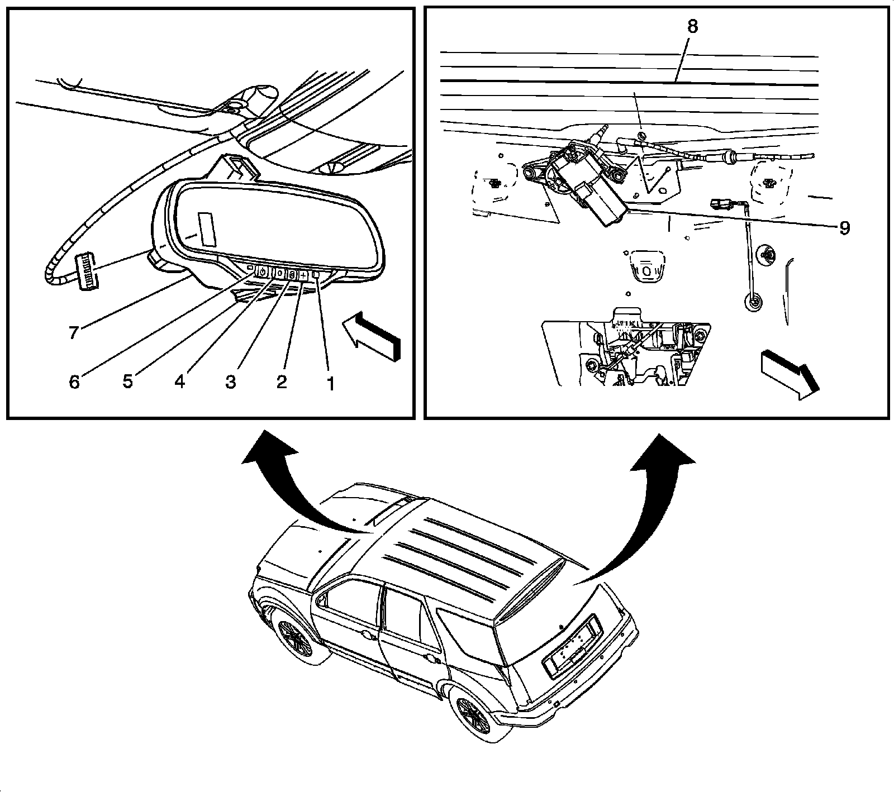

Emergency Contact Button: Locations
Passenger Compartment/Roof Component Views
Inside Rear View Mirror and Rear Window Defogger Grid Components

1 - Headlight Sensor
2 - Emergency Button (UE1)
3 - OnStar(R) Call Center Button (UE1)
4 - Answer/End Call Button (UE1)
5 - Cellular Microphone (UE1)
6 - Inside Rearview Mirror (ISRVM) On/Off Button
7 - Inside Rearview Mirror (ISRVM)
8 - Rear Window Defogger Grid
9 - Rear Window Wiper Motor